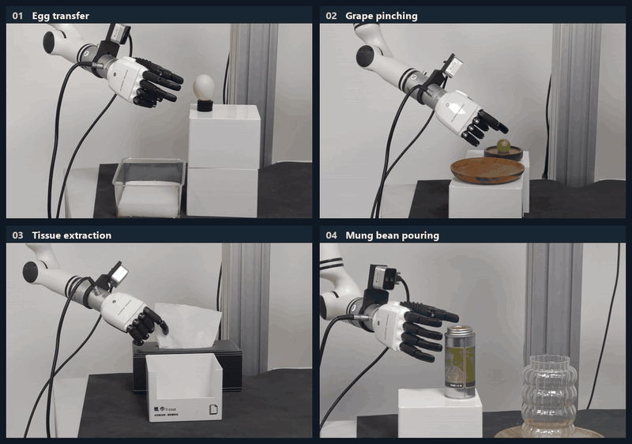

Estimate visual reliability
Compare a frozen reference policy’s actions under paired lighting changes during training. At runtime, VASE estimates action reliability from the current observation.
ROBOT MANIPULATION / VISION + TOUCH
When lighting changes, let verified touch guide the next action.
* Equal contribution
Standard lighting
4 real-world tasksUnseen lighting
+42.5 pp over N0-VTLAUniVTAC simulation
8 tasks · VASE and TACE enabledTen recordings across four tasks. Filter by task to compare light changes with synchronized camera views and tactile heatmaps.
These clips illustrate lighting disturbances. See the evaluation for the full trial results.
A 2 Hz vision–language branch caches context and starts the action flow. A 30 Hz branch uses current touch to resume the flow and refine only replaceable actions that have yet to execute.
Compare a frozen reference policy’s actions under paired lighting changes during training. At runtime, VASE estimates action reliability from the current observation.
Match a cached tactile prediction to the measurement at the same time, using only forecasts consistent with the commands that were executed.
Visual reliability and forecast error control the strength of a bounded feature correction. Current tactile and execution features determine the correction itself.
With forecast agreement, high visual reliability favors preserving the nominal action and low reliability favors visual compensation. With forecast disagreement, high reliability favors contact correction and low reliability favors joint correction.
From a fragile egg to loose grains, the robot handles objects that demand different kinds of touch.

In simulation, TipDex-VTLA uses the UniVTAC optical tactile encoder with both VASE and TACE enabled. TACE verifies predicted tactile images against time-aligned measurements.
Each real-world method ran 20 trials per task under standard lighting and 20 under unseen lighting. The unseen set includes 10 combinations of asymmetric light and color temperature, five low-light settings and five bright-light settings.
| Method | Egg | Grape | Tissue | Beans | Average |
|---|
The full adapted model averages 84.9% across eight tasks. Published baseline results retain their reported configurations.
| Method | Lift Bottle | Pull-out Key | Lift Can | Put Bottle | Insert Hole | Insert HDMI | Insert Tube | Grasp Classify | Avg. |
|---|
Removing VASE has a larger effect under unseen lighting. Tactile verification and the gate head also help under standard lighting.
| Configuration | Egg | Grape | Tissue | Beans | Average |
|---|
Compared with disabling feature correction, the full model reduces trajectory RMSE by 24.2% at −3 EV and 13.0% at +3 EV.
Unpublished manuscript. Bibliographic details may change as the draft is revised.